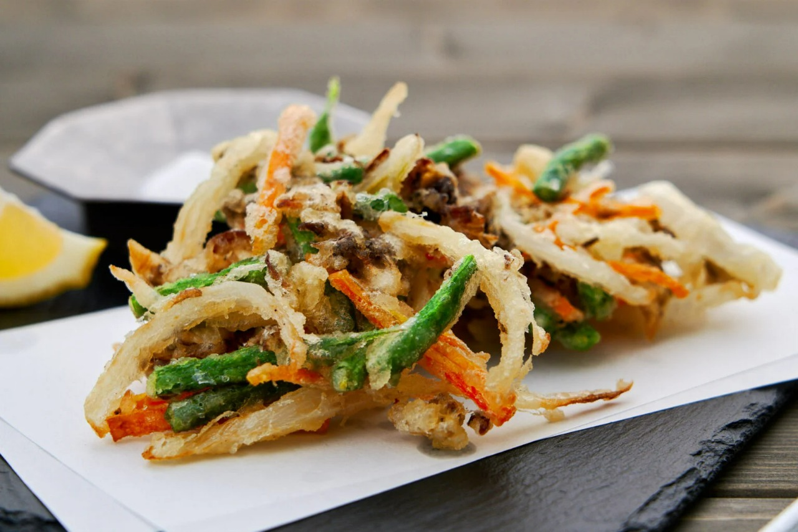
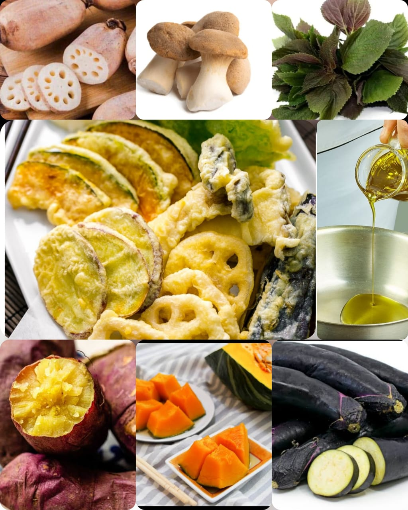

Tempura
Home
Alongside sushi and ramen, tempura is another mandatory menu item for Japanese restaurants. Encased in a crunchy, crispy yet light batter, these perfectly deep-fried seafood, and vegetable are seriously addicting. After sharing my Shrimp Tempura recipe, I am excited to share today's recipe on Vegetable Tempura (野菜の天ぷら) since many of you have requested it. Dipped in batter and deep-fried, each vegetable gets cooked perfectly on the inside, while the natural sweetness and flavor are enhanced. You would enjoy them piping hot with a delicate dipping sauce with grated daikon..

Ingredients
1 Japanese sweet potato
⅛ kabocha
2 inch lotus root (renkon)
2 king oyster mushrooms
1 Japanese eggplant
4 shiso leaves
1 large egg
200 ml iced water
1 cup all-purpose flour

Nutrition Facts
Calories 100g
Total Fat 5.0g
Cholesterol 250mg
Sodium 450.0mg
Total Carbohydrate 11.0g
Vitamin C 10%
Vitamin A 6%
Procedure
Gather all the ingredients.
Slice the Japanese sweet potato into ¼-inch (6 mm) rounds and soak in water for 15-30 minutes to remove the excess starch. Then, dry them using paper towels.
Cut the kabocha squash and lotus root into ¼-inch (6 mm) slices. Soak the lotus root in vinegar water (2 cups water + 1 tsp vinegar).
Cut the king oyster mushrooms into thin slices.
Cut off and discard the stem and calyx of the eggplant first, then cut it in half lengthwise. Leaving the top end intact, slice the eggplant lengthwise very thinly (⅛ inch, 3 mm) to within 1 inch of the top so the slices remain connected. Repeat with the other half. Gently press down on the eggplant halves to fan out the slices.
Make sure your ingredients are dry. If they're wet, dry them with a paper towel first before dipping them in the batter. Tip: When the tempura is frying, the moisture from the ingredients will evaporate and the tempura will become crispy. However, if the ingredients have extra moisture, the tempura will become soggy after deep-frying. Once the ingredients are ready, add the oil to a deep fryer or pot to a depth of 1½ inches (3 cm) and heat to 320°F (160°C). Use a thermometer for precise temperature control. You can also check the temperature with your chopsticks: Dip the tips of your chopsticks in the oil. When you see small bubbles form around the chopsticks, the oil is ready for deep-frying.
While the oil is heating up, prepare the tempura batter. Gather all the ingredients.
Sift the all-purpose flour into a large bowl.
Add the iced water to a measuring cup or bowl. Then, add the egg.
Whisk the egg and water mixture vigorously and discard the foam on the surface.
Slowly pour the egg mixture into the flour while mixing the batter with chopsticks in a figure 8 pattern for about 15-20 seconds. Do not overmix to avoid activating the wheat gluten; it's fine to and leave some lumps in the batter. Keep the batter cold at all times by adding 1-2 ice cubes to the batter or by putting the batter bowl in a larger bowl of iced water.
Deep-fry starting with the root vegetables, which need a lower oil temperature than the non-root vegetables. For the root vegetables, deep-fry at 320°F (160°C) for 3-4 minutes. For the other vegetables and mushrooms, deep-fry at 338-356°F (170-180°C) for 1-2 minutes. Deep-fry the shiso leaves for 15-20 seconds. When the oil reaches the right temperature, dip one piece of vegetable in the batter, let the excess drip off for a second or two, and very gently place it into the hot oil.
Continue dipping and adding one piece at a time. Do not overcrowd the pot. Remember, your ingredients should take up no more than about half of the oil surface area at any one time. When you put in too many ingredients at once, the oil temperature will drop quickly. Make sure to maintain the right temperature at all times. To batter the shiso leaves, sprinkle a bit of sifted flour on the back of the leaves and dip only the back of the leaf into the batter.
Deep-fry until golden and remove from the oil. Transfer the tempura to a wire rack or paper towel to remove the excess oil.
Continue to deep-fry until you've cooked all your ingredients. Between batches, use a fine-mesh skimmer to remove the tempura crumbs, which will burn and turn the oil darker if you leave them in the oil.
Grate the daikon and squeeze out most of the liquid.
Serve the tempura immediately with the grated daikon on the side. Mix some grated daikon into the dipping sauce for a refreshing taste and dip the tempura pieces in the dipping sauce to enjoy.
Expert Guide
Back ←
Scroll to Top ↑